Federated Learning × Multi-Agent × LLM
面向公路工程造价估算的隐私保护框架
Research Context
造价估算直接影响项目立项、资金配置与施工控制，偏差往往导致资源浪费或项目失败。
工程造价数据涉及企业成本结构、报价策略及资源配置等商业机密，各方无法直接共享数据。
随着数据安全与隐私保护法规加强，多方数据汇集面临高合规约束，形成"数据孤岛"问题。
基于单一数据源训练的模型过度依赖特定分布，泛化能力不足。
现有方法缺乏对多主体协同建模的系统性框架，模型构建仍依赖大量人工经验与反复调参。
Webster et al. 2024 · Karadimos 2024如何在不共享原始数据的前提下实现多方协同建模，成为工程造价估算的关键问题。
Core Research QuestionData Heterogeneity
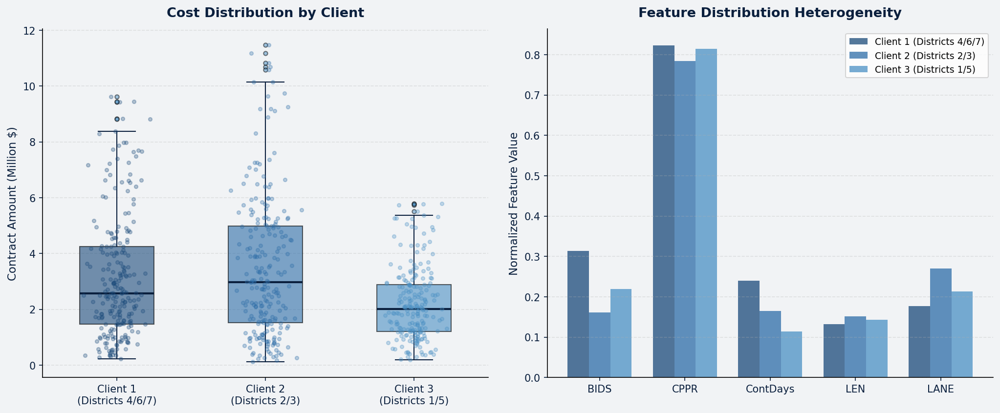
Chapter 01
MAS-FL-LLM：三阶段框架
Overall Architecture
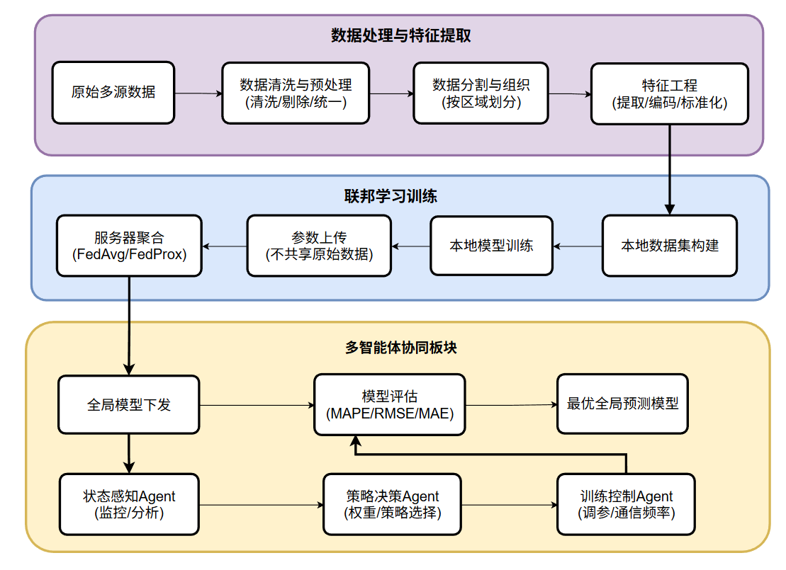
Federated Learning
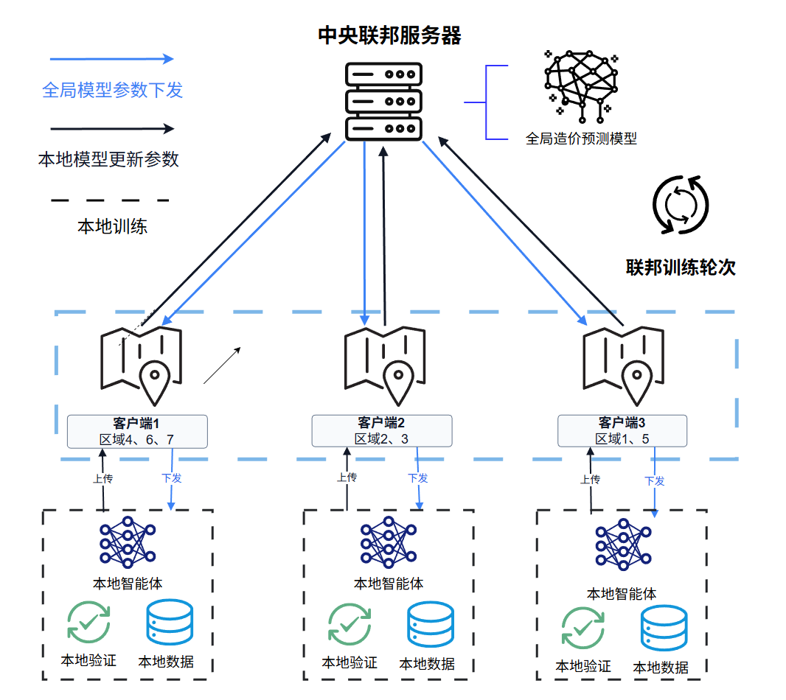
水平联邦学习 + MLP 预测器
每个客户端本地训练 MLP 模型，通过 FedAvg 聚合参数。
MLP 结构：输入层(10) → 隐藏层(128→128→64→32) → 输出层(1)，共 28,993 参数
激活函数：GELU，优化器：Adam (lr=0.0005, weight_decay=1e-4)，Dropout=0.1
目标变量：ContAmnt^0.25 幂变换，逆变换 Y^4 还原
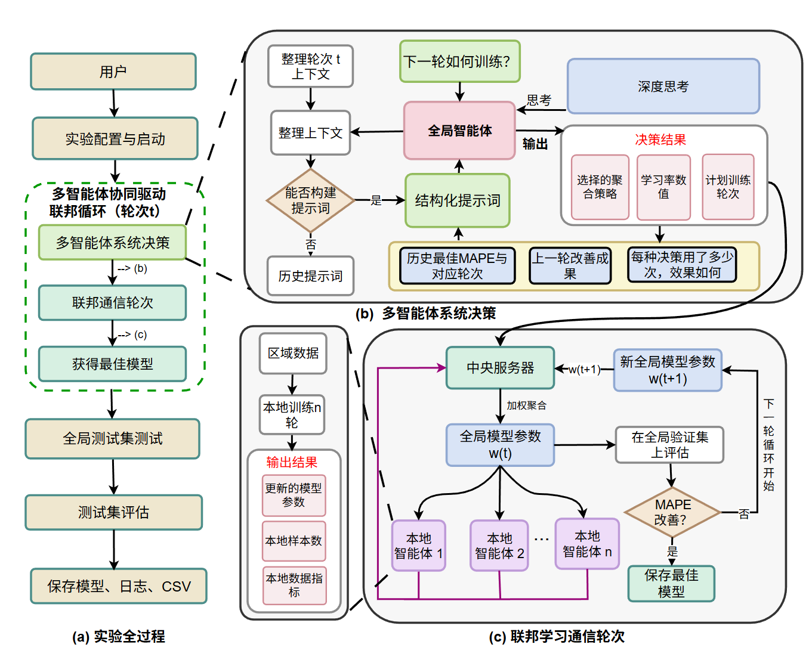
Multi-Agent System
Local Agents + Central Agent 协作
Local Agent：数据预处理（联邦标准化）、本地训练（FedProx, mu=0.01）、性能报告生成。
Central Agent (DeepSeek LLM)：接收各客户端报告，从 4 种策略中动态选择聚合方式。
4 种策略：size_only / perf_only / hybrid / fairness_clip，前 4 轮强制探索，第 5 轮起 LLM 决策。
LLM-Driven Aggregation
核心创新：第 7 行
传统 FedAvg 使用固定权重 wₖ = nₖ/N（数据量比例），LLM 则根据实时状态矩阵 S 动态输出权重。
状态向量 sₖ 包含：MAPE、Loss、数据量、训练轮次等多维指标。
约束条件：Σwₖ = 1, wₖ ≥ 0
前 4 轮强制探索 4 种策略，第 5 轮起 LLM 自主决策。
Decision Process
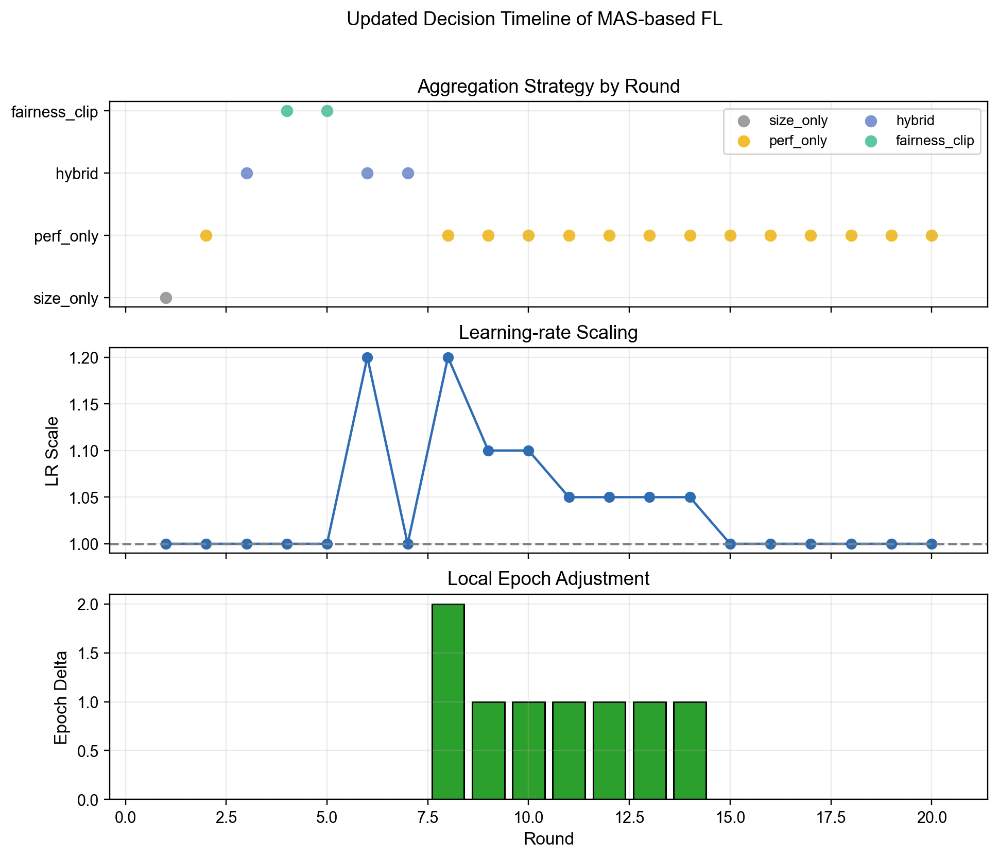
Three-Stage Pipeline
每轮通信中，LLM 根据实时训练状态调整权重，而非使用固定比例。
Chapter 02
MAPE 42.07% · 20 轮收敛 · 偏差修正 MPE -15.8% → -1.3%
Overall Comparison
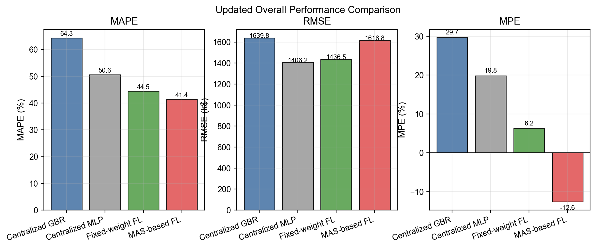
Training Dynamics
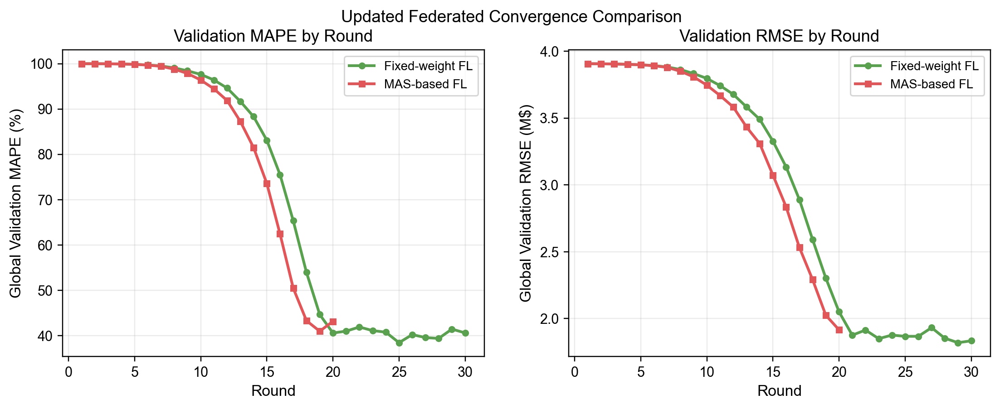
更快收敛，更少通信
MAS-FL-LLM 在第 20 轮达到最优，而 FedAvg 需要 30 轮。
LLM 动态权重使模型在早期快速聚焦于高质量客户端，后期平衡各方贡献。
通信效率提升 33%，在带宽受限场景下优势显著。
Client-Level Results
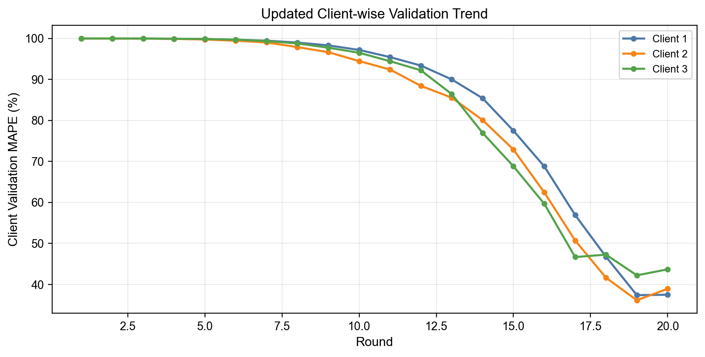
各客户端均获提升
Client 1（Districts 4/6/7，233 样本）：最终 MAPE 40.44%
Client 2（Districts 2/3，235 样本）：最终 MAPE 36.94%
Client 3（Districts 1/5，220 样本）：最终 MAPE 36.05%
三个客户端按地理邻近性分组，各自保留独立的区域数据分布特征。
Best Performance
MAPE · MAS-FL-LLM · 所有方法中最优
相比 FedAvg（MAPE 55.15%）降低 24%，相比集中式 GBR（64.33%）降低 35%。仅需 20 轮通信即达最优。
Ablation Study
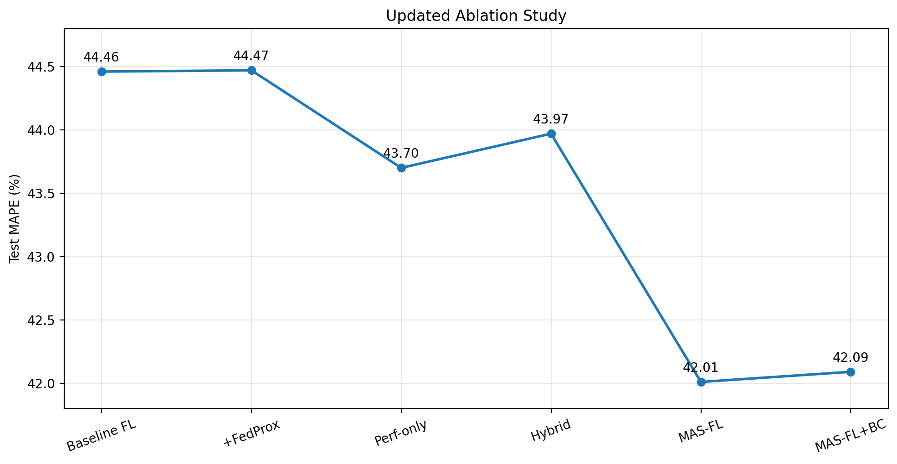
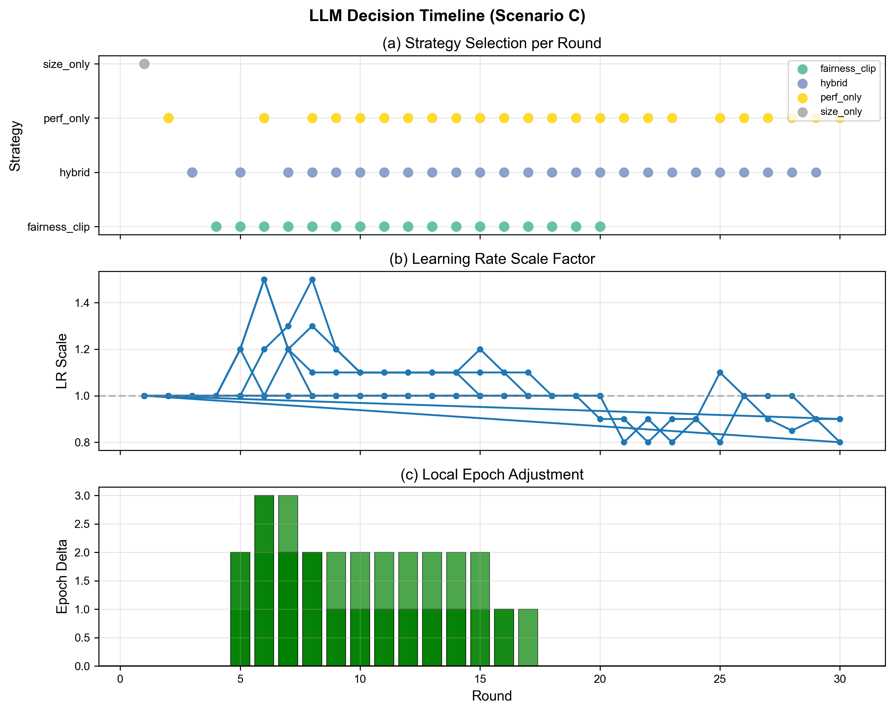
移除 LLM 动态决策（固定 hybrid）：MAPE 上升至 55.26%。LLM 在第 5 轮后根据训练状态自适应切换策略是性能提升的关键。
Multi-Seed & Stratified Evaluation
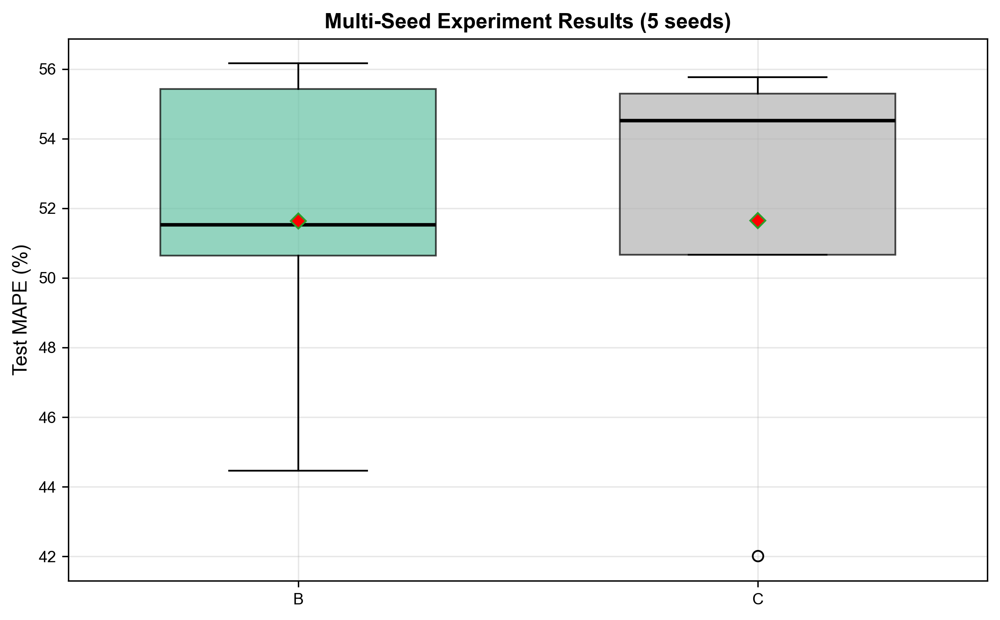
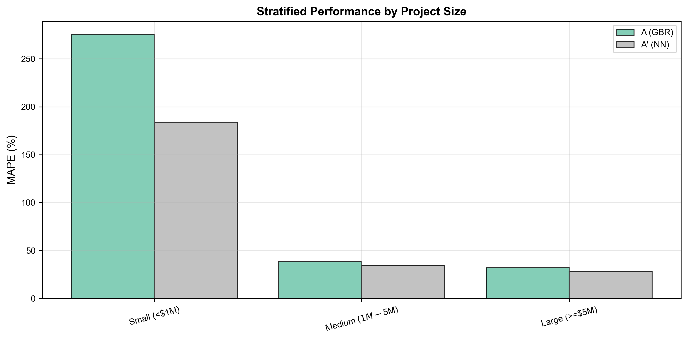
5 组随机种子验证统计显著性；按项目规模分层评估（小型 <$1M / 中型 $1M-$5M / 大型 ≥$5M），各层级均优于基线。
Bias Correction
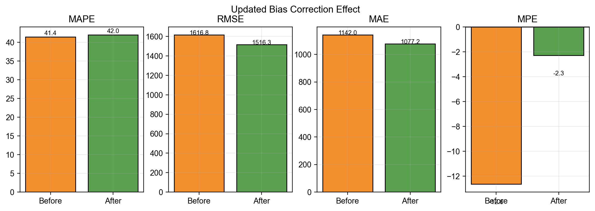
Key Contributions
首次将 LLM 驱动的多智能体系统引入联邦学习聚合决策，实现了从"固定规则聚合"到"上下文感知的自适应聚合"的范式转变。
MAS-FL-LLM · First in Highway Cost EstimationThank You
Agent-Augmented Federated Learning
for Highway Cost Estimating